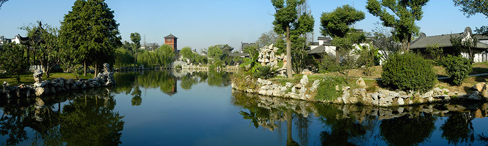

据乌镇近郊的谭家湾古文化遗址考证表明，大约在7000年前，乌镇的先民就在这一带繁衍生息了。 那一时期，属于新石器时代的马家浜文化。
据乌镇近郊的谭家湾古文化遗址考证表明，大约在7000年前，乌镇的先民就在这一带繁衍生息了。那一时期，属于新石器时代的马家浜文化。春秋时期，乌镇是吴越边境，吴国在此驻兵以防备越国，史称"乌戍"。
秦时，乌镇属会稽郡，以车溪（即今市河）为界，西为乌墩，属乌程县，东为青墩，属由拳县，乌镇分而治之。其后，乌镇或属浙江的湖州、嘉兴管辖，或属江苏的苏州治理。
唐时，乌镇隶属苏州府。后梁，隶属不变，为吴越国地。后晋天福五年（940），置秀州，青墩遂属嘉兴县隶秀州。
宋淳化三年（992），乌镇属乌程隶湖州。熙宁十年（1077），析嘉兴县西境的梧桐、永新、清风等5个乡归崇德县，青镇在清风乡，属崇德隶秀州。元丰初年，有分乌墩镇、青墩镇的记载，后为避光宗讳，改称乌镇、青镇。嘉定年间，升嘉兴为军，青镇遂属崇德隶嘉兴军。宝庆二年（1226），改湖州为安吉，乌镇为安吉州乌程县地。宋代，镇地设监镇官，管火禁和酒税，并招军习武，以御盗寇。
元至元十四年（1277），乌镇为湖州路乌程县地，青镇为嘉兴路崇德县地。镇地设都巡检。
明宣德五年（1430），析崇德县的募化、千金、保宁、清风、永兴和梧桐六乡置桐乡县，青镇属之，隶嘉兴府；乌镇仍属乌程隶湖州府。这一隶属关系至清未变。
由于乌镇是两省、三府、七县交接处，治安环境十分复杂，所以，明清时在乌镇特别设立浙直分署和江浙分署，以一小镇而行使相当于府衙的职能。
民国元年（1912），乌、青两镇依旧分治。1950年5月，乌、青两镇终于合并，称乌镇，属桐乡县，隶嘉兴，直到今天。
乌镇古名乌墩、乌戍。乌墩之“墩”，王雨舟在《二溪编》 中说 “乌镇古为乌墩，以其地脉坟起高于四旷也……”，解释得已够明白。但何以称“乌”呢？有很多种说法。一说是“越王诸子争君长海上分封于此，遂为乌余氏，故曰乌墩”；一说“因土地神乌将军而名乌”；一说“乌有乌陀古迹，青有昭明青锁”，故有乌、青之名。此数说前人都提出异议，以为或无证，或附会，或缺乏历史常识，卢学溥编修《乌青镇志》时也逐加批驳。同时，他提出一个较为合理的说法，这个说法是在清康熙二十七年（1688）乡贤在《乌青文献》中提出的：“乌墩、青墩之名，其从来远矣……大都江山自开辟以来，何有其名字？皆世谛流布相承耳，如‘齐鲁青未了’，‘澄江静如练’，是为山水传神写照语也。乌青之义盖类此。”
因地理因素而得名
春秋时期，乌镇是吴越边境，吴国驻兵于此设防越国，“乌戍”就由此而来.
唐时，乌镇隶属苏州府。唐咸通十三年(872)的《索靖明王庙碑》(朱洪撰并书，吴晔篆额)首次出现“乌镇”的称呼，此前无据。这一时期的另一块碑《光福教寺碑》中则有“乌青镇”的称呼。乌镇称“镇”的历史可能从此开始，当时，镇地置有镇遏使的官职。
因历史而得名
乌镇是河流冲积平原，沼多淤积土，故地脉隆起高于四旷，色深而肥沃，遂有乌墩之名。其实，这类地名在当地并不鲜见。距乌镇数公里处有一村叫红墩，镇志上说：“红墩在镇西，地脉坟起，厥土赤壤，村以是名。”
旁又有一村名紫墩，就是因为多紫色土的缘故。红墩、紫墩的命名为乌墩名称的传神写照说提供了现实的佐证。
因传说典故而得名
不过在乌镇民间，人们更喜欢更带感情色彩的镇名由来传说。唐宪宗元和年间，将军乌赞为平定叛乱，牺牲在乌镇，人们为了纪念这位使百姓免遭战乱之苦的将军，在乌镇建造了一座乌将军庙，镇也以其名命之。宋元丰初年（1078），已有分乌墩镇、青墩镇的记载，南宋宋光宗登基，他的名字是“惇（音同‘敦’）”， 为避光宗讳，天下念“敦”的字全不能用，自此之后乌墩就定称为乌镇。乌墩镇、青墩镇也改称为乌镇、青镇 1950年，乌、青两镇合并后称乌镇至今。